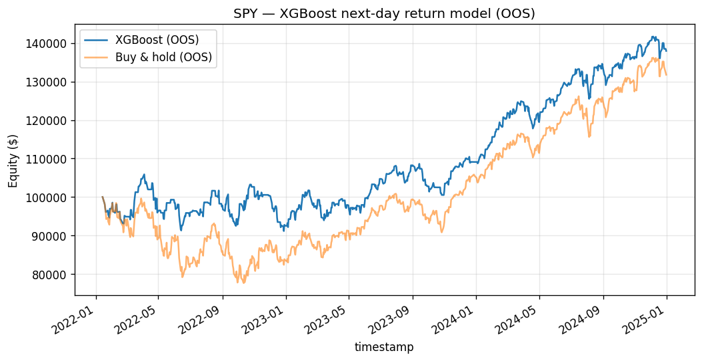

A regularized additive learner on eight technical features, and an honest accounting of how little of its in-sample skill survives out of sample.
Compiled 2026-05-28 · SPY daily, OOS window 2022–2024
We ask whether a gradient-boosted regression tree can extract a tradable directional signal from a small panel of standard technical features on the SPY exchange-traded fund. The learner is an XGBoost regressor (300 trees, depth 4, shrinkage 0.03, row/column subsampling 0.8) trained to predict the next day's log return from eight inputs: multi-horizon returns, realized volatilities, the 14-day Wilder RSI, and price deviations from two moving averages. The model is fit on a strictly chronological 80/20 split (no shuffling) to forbid lookahead; the held-out window spans January 2022 through December 2024.
In sample the predictor is highly accurate — prediction-to-target correlation 0.712 and sign accuracy 0.649 — but out of sample these collapse to an information coefficient of 0.105 and a sign accuracy of 0.532, barely above a coin flip. Despite this thin edge, a long/flat trading rule earns an annualized 13.2% at a Sharpe of 0.96 and a Sortino of 1.52 over 744 out-of-sample bars, with a maximum drawdown of −11.8% and a hit rate of only 45.6%.
We reconcile these numbers analytically. The Fundamental Law of Active Management predicts a maximum information ratio of \(0.105\sqrt{252}\approx 1.67\); the realized 0.96 implies a transfer coefficient near 0.57, the price of the long-only, binary, cost-bearing implementation. We then show why a sub-50% hit rate can still be profitable: the relevant quantity is the covariance of the position with the realized return, not the probability of being right, and the long/flat map is a convex, option-like filter on the signal.
Keywords. gradient boosting, XGBoost, supervised forecasting, information coefficient, fundamental law of active management, lookahead bias, transfer coefficient.
The supervised-forecasting premise is seductive in its simplicity: collect features that summarize the recent state of a price series, attach to each the return that followed, and let a flexible learner discover whatever non-linear mapping connects the two. If markets harbor any conditional structure in the daily mean, a sufficiently expressive regressor ought to surface it. This paper subjects that premise to a deliberately modest test and an unusually candid post-mortem.
Our hypothesis is narrow and falsifiable: a boosted-tree regressor can learn enough non-linear structure in standard technical features to produce a directional next-day-return signal that beats a passive long position in regimes that contain real drawdowns. The vehicle is SPY, the most liquid equity index proxy available, sampled daily. The learner is gradient boosting — the workhorse of tabular machine learning — configured conservatively so that any edge we observe is not an artifact of tuning against the test set.
The contribution is less the model than the accounting. We will find that the in-sample fit is excellent and the out-of-sample fit is nearly absent, and yet the economic backtest is respectable. Rather than celebrate or dismiss this, we derive the relationships that make all three facts mutually consistent: the bias–variance gap that explains the collapse in predictive accuracy, the Fundamental Law that bounds how much signal the realized Sharpe can carry, and a covariance decomposition that explains profitability under a losing hit rate. The mathematics, not the headline return, is the point.
We use SPY daily adjusted bars from yfinance, spanning 2010-01-01 to 2024-12-31. Let \(P_t\) denote the adjusted close on bar \(t\). All features are deterministic functions of information available at the close of bar \(t\), and the target is the return realized over the following bar, so that no input ever peeks at its own label.
The \(k\)-bar log return and the \(k\)-bar realized volatility are
\begin{equation} r^{(k)}_t=\ln\!\frac{P_t}{P_{t-k}},\qquad \mathrm{vol}^{(k)}_t=\sqrt{\frac1k\sum_{i=1}^{k}\bigl(r^{(1)}_{t-i+1}-\bar r\bigr)^2}, \end{equation} with \(\bar r\) the sample mean of the one-bar log returns inside the window. The relative-strength index uses Wilder's exponential smoothing. With up- and down-moves \begin{equation} U_t=\max(P_t-P_{t-1},0),\qquad D_t=\max(P_{t-1}-P_t,0), \end{equation} the smoothed averages recur as \begin{equation} \overline U_t=\frac{(n-1)\,\overline U_{t-1}+U_t}{n},\qquad \overline D_t=\frac{(n-1)\,\overline D_{t-1}+D_t}{n}, \end{equation} and the index is \begin{equation} \mathrm{RS}_t=\frac{\overline U_t}{\overline D_t},\qquad \mathrm{RSI}_t=100-\frac{100}{1+\mathrm{RS}_t},\qquad n=14. \end{equation}Finally, the price deviation from an \(n\)-bar simple moving average is \(\mathrm{px\_vs\_sma}_n(t)=P_t/\mathrm{SMA}_n(t)-1\). The eight scalar features per bar are ret_1, ret_5, ret_20 (returns at horizons 1, 5, 20), vol_5, vol_20, rsi_14, and px_vs_sma20, px_vs_sma60. The regression target is the next-bar log return.
Gradient boosting builds the predictor as a shrunken sum of regression trees,
\[ \hat F_M(x)=\sum_{m=1}^{M}\eta\,f_m(x), \]where each \(f_m\) is a tree and \(\eta\) is the learning rate. The ensemble is grown stagewise. At round \(t\) we hold the previous prediction \(\hat y_i^{(t-1)}\) fixed and choose a new tree to minimize the regularized objective
\begin{equation} \mathcal L^{(t)}=\sum_{i=1}^{n}\ell\!\left(y_i,\hat y_i^{(t-1)}+f_t(x_i)\right)+\Omega(f_t),\qquad \Omega(f)=\gamma T+\tfrac12\lambda\sum_{j=1}^{T}w_j^2, \end{equation}in which \(T\) is the number of leaves, \(w_j\) the weight in leaf \(j\), \(\gamma\) a per-leaf complexity penalty, and \(\lambda\) an \(L_2\) shrinkage on the leaf weights.
XGBoost (Chen & Guestrin, 2016) replaces the loss by its second-order Taylor expansion around the current prediction. Writing the gradient and Hessian of the loss as \(g_i=\partial_{\hat y}\,\ell(y_i,\hat y_i^{(t-1)})\) and \(h_i=\partial^2_{\hat y}\,\ell(y_i,\hat y_i^{(t-1)})\),
\[ \mathcal L^{(t)}\simeq\sum_{i=1}^{n}\Bigl[g_i\,f_t(x_i)+\tfrac12 h_i\,f_t(x_i)^2\Bigr]+\Omega(f_t). \]For the squared-error loss \(\ell=(y-\hat y)^2\) used here the derivatives are explicit:
\begin{equation} g_i=-2\bigl(y_i-\hat y_i^{(t-1)}\bigr),\qquad h_i=2. \end{equation}The gradient is (up to a factor of two) the current residual, so each tree fits what the ensemble has so far failed to explain; the constant Hessian means the Newton step coincides with ordinary least-squares fitting for this loss. The second-order machinery earns its keep for non-quadratic losses, but stating it here makes the leaf algebra below transparent.
For a tree of fixed structure, let \(I_j=\{i:x_i\text{ falls in leaf }j\}\) and define the leaf aggregates \(G_j=\sum_{i\in I_j}g_i\) and \(H_j=\sum_{i\in I_j}h_i\). The quadratic objective is solved in closed form: the optimal weight and the resulting structure score are
\begin{equation} w_j^\star=-\frac{G_j}{H_j+\lambda},\qquad \tilde{\mathcal L}=-\frac12\sum_{j=1}^{T}\frac{G_j^2}{H_j+\lambda}+\gamma T. \end{equation}The score \(\tilde{\mathcal L}\) is the impurity functional that drives tree growth. Because enumerating all tree topologies is intractable, XGBoost grows greedily: a candidate split partitions a node's instances into left and right children \(L,R\), and is accepted only if it reduces \(\tilde{\mathcal L}\). The gain of a split is the difference of structure scores before and after,
\begin{equation} \mathrm{Gain}=\frac12\!\left[\frac{G_L^2}{H_L+\lambda}+\frac{G_R^2}{H_R+\lambda}-\frac{(G_L+G_R)^2}{H_L+H_R+\lambda}\right]-\gamma. \end{equation}A split is taken only when \(\mathrm{Gain}>0\); the \(-\gamma\) term is a built-in pruning threshold that suppresses splits whose impurity reduction does not exceed the per-leaf cost.
Three hyperparameters govern the regularization regime, and we set all three conservatively. The shrinkage \(\eta=0.03\) scales every tree's contribution down by a factor of more than thirty, so no single tree dominates the fit; learning is slow and incremental, which is why 300 trees are needed to accumulate signal — a textbook bias-for-variance trade in which many weak, shrunken corrections outperform a few aggressive ones. Row and column subsampling at 0.8 implement stochastic gradient boosting (Friedman, 2002): each tree sees 80% of the rows and 80% of the features, which decorrelates the ensemble members and damps overfitting much as bagging does. Depth 4 caps each tree at \(2^4=16\) leaves, so the learner can represent interactions among at most four features at a time — low-order non-linearity by construction, not the high-order memorization that deeper trees invite.
The single most consequential design choice is not to shuffle. Financial series are serially dependent and non-stationary: adjacent bars share overlapping feature windows and live in the same volatility regime. A random train/test split scatters near-duplicate, autocorrelated neighbors across both sides of the partition, so the model effectively trains on points that are statistical twins of the ones it is later scored on. This is label leakage, and it inflates every out-of-sample metric, sometimes dramatically.
The lookahead-safe protocol is a strictly chronological split: train on the past, test on the future, never the reverse. We use an 80/20 cut with no shuffling — \(n_{\text{train}}=2971\) bars ending just before the split, and \(n_{\text{test}}=743\) bars beginning at the split date 2022-01-14. A still more rigorous treatment, which we flag for future work, inserts an embargo or purge around the boundary (López de Prado, 2018) to remove training points whose label windows overlap the test region; with a one-bar target horizon the residual leakage here is minimal, but the principle is the same. The full hyperparameter set — 300 trees, depth 4, learning rate 0.03, subsample 0.8, colsample_bytree 0.8, random_state 42 — was fixed in advance and never adjusted in response to test-set performance, the discipline that gives the out-of-sample numbers their meaning.
We define the metric battery once for the whole catalogue; subsequent papers reference it. Let the simple and log returns be \(R_t=P_t/P_{t-1}-1\) and \(r_t=\ln(P_t/P_{t-1})\). A position \(w_t\in\{0,1\}\) is held with one-bar execution lag, so the net per-bar strategy return is
\begin{equation} r^s_t=w_{t-1}R_t-c\,\lvert w_t-w_{t-1}\rvert,\qquad c=1.5\text{ bp}, \end{equation}where the cost \(c\) (a 1 bp commission-and-slippage component plus 0.5 bp of impact) is charged per unit of turnover. On bars where the position changes, the fill is taken at that bar's open rather than the previous close, so the entry bar earns its open-to-close return in place of \(R_t\); unchanged bars follow the expression above. This avoids crediting the strategy with the very move from which the signal was computed. Equity compounds as \(E_t=E_0\prod_\tau(1+r^s_\tau)\). With the risk-free rate set to zero, \(P=252\) trading days, and \(N\) bars, the performance statistics are
\begin{equation} \text{ann.\ return}=\Bigl(\textstyle\prod_t(1+r^s_t)\Bigr)^{P/N}-1,\qquad \widehat{SR}=\frac{\bar r^s}{s}\sqrt P, \end{equation} \begin{equation} \sigma_d=\sqrt{\frac1N\sum_{t}\min(r^s_t,0)^2},\quad \text{Sortino}=\frac{\bar r^s}{\sigma_d}\sqrt P,\quad \mathrm{MDD}=\max_t\Bigl(1-\frac{E_t}{\max_{\tau\le t}E_\tau}\Bigr), \end{equation}with \(s\) the sample standard deviation of \(r^s_t\) and the hit rate defined as the fraction of active bars (\(w_{t-1}=1\)) for which \(r^s_t>0\). The trading rule maps the model's prediction to a position by going long when the signal is positive and standing flat otherwise:
\begin{equation} w_t=\mathbf 1\!\left\{\hat F(x_t)>0\right\}. \end{equation}This binary, long-only map is deliberately crude: it discards the predicted magnitude entirely and never shorts. We will see in the discussion that this crudeness is exactly what costs the strategy roughly two-fifths of its theoretical signal — and also what caps its drawdown.
We first read the model's mind through the information coefficient, \(\mathrm{IC}=\mathrm{corr}(\hat y,y)\), and the directional sign accuracy. The contrast between the training window and the held-out window is stark.
Table 1. Predictive diagnostics, in-sample versus out-of-sample (train_metrics.json).
| Diagnostic | Train | Test (OOS) |
|---|---|---|
| Prediction correlation (IC) | 0.7123 | 0.1054 |
| Sign accuracy | 0.6493 | 0.5316 |
| Sample size (bars) | 2971 | 743 |
The training IC of 0.712 is the fingerprint of a flexible learner that has substantially memorized its window; the out-of-sample IC of 0.105 is what genuinely generalizes. Out-of-sample sign accuracy of 0.532 is barely above the 0.500 of a coin flip. This gap — high in-sample skill, thin out-of-sample skill — is the canonical bias–variance signature, and it is precisely the diagnosis the chronological split was built to deliver honestly. A shuffled split would have reported an inflated test IC and hidden the problem.
Now the economic outcome. Translating the thin signal through the long/flat rule and the cost model over the 744-bar held-out window produces the backtest in Table 2.
Table 2. Out-of-sample backtest, 2022-01-14 through 2024-12-31 (metrics.json).
| Metric | Value |
|---|---|
| Annualized return | +13.2% |
| Sharpe ratio | 0.9627 |
| Sortino ratio | 1.5223 |
| Maximum drawdown | −11.8% |
| Hit rate (active bars) | 45.6% |
| Out-of-sample bars | 744 |

So a model whose directional accuracy is 53% in sample and 53% out of sample — and which is right on fewer than half its active bars — nonetheless compounds at 13.2% with a Sortino above 1.5. The Sortino exceeding the Sharpe tells us the downside deviation is smaller than the total deviation: the realized losses are milder than the realized variance would suggest. The remainder of the paper explains why none of this is contradictory.
How much Sharpe should an IC of 0.105 be able to support? The Fundamental Law of Active Management (Grinold, 1989; Grinold & Kahn) gives the bridge. It states that the information ratio attainable from a forecasting signal is, to first order, the product of skill and the square root of breadth,
\begin{equation} \mathrm{IR}\approx\mathrm{IC}\cdot\sqrt{\mathrm{BR}}, \end{equation}where breadth \(\mathrm{BR}\) is the number of independent bets taken per year. A daily strategy on one asset makes roughly \(\mathrm{BR}\approx252\) approximately independent directional bets per year. With the out-of-sample IC of 0.105 this implies a theoretical ceiling
\[ \mathrm{IR}_{\max}\approx 0.105\sqrt{252}\approx 1.67. \]The realized out-of-sample Sharpe is 0.96. The ratio of realized to attainable information ratio defines the transfer coefficient,
\begin{equation} \mathrm{TC}=\frac{\mathrm{IR}_{\text{realized}}}{\mathrm{IC}\sqrt{\mathrm{BR}}}\approx\frac{0.96}{1.67}\approx 0.57. \end{equation}The hit rate of 45.6% says the strategy loses on most of the days it is invested, yet it is profitable. The resolution is that the regression targets the conditional mean return, not the sign, and the relevant quantity for profit is a covariance, not a probability. Decompose the expected strategy return (ignoring costs) into a covariance term and a market-exposure term:
\begin{equation} \mathbb E[r^s_t]=\mathbb E[w_{t-1}R_t]=\mathrm{Cov}(w_{t-1},R_t)+\mathbb E[w_{t-1}]\,\mathbb E[R_t]. \end{equation}Profit requires \(\mathrm{Cov}(w,R)>0\) — the position must be positive more often when the return is large and positive — but this can hold even when \(\Pr(R>0\mid w=1)<\tfrac12\). Two mechanisms make it work here. First, magnitude asymmetry: the long-and-up days carry larger absolute returns than the more numerous long-and-down days, so a minority of correct, large bets outweighs a majority of small wrong ones. Second, convexity: the long/flat map \(w=\max(0,\mathbf 1\{\hat F>0\})\) is a convex, option-like filter that truncates the left tail by sitting out predicted-negative days. By standing flat through the worst forecasts, the strategy clips its losses — which is exactly why its maximum drawdown of −11.8% is shallow relative to a passive long position and why the Sortino comfortably exceeds the Sharpe.
The out-of-sample evidence rests on 743 daily samples — roughly three calendar years — which is a thin and regime-specific basis: the window happens to contain both the 2022 drawdown and the 2023–2024 recovery, and the IC may not be stable across other regimes. A single asset offers no cross-sectional breadth, so the \(\mathrm{BR}\approx252\) figure is generous. We did not perform purged, embargoed \(k\)-fold cross-validation; a single chronological split gives one realization of the test statistic and no estimate of its sampling variance. Because boosted-tree pipelines invite many configuration choices, the reported Sharpe is also exposed to multiple-testing inflation, and a Deflated Sharpe Ratio adjustment (López de Prado, 2018) would discount it for the number of trials implicitly run. On the modeling side, the binary position is the clearest lever: a magnitude-aware sizing rule, possibly with a short leg, should raise the transfer coefficient toward unity, and richer feature sets or volatility-targeted position sizing are natural next steps. The honest summary is that the model demonstrates a small, real, and fragile edge — and that the value of the exercise lies in measuring its fragility precisely.